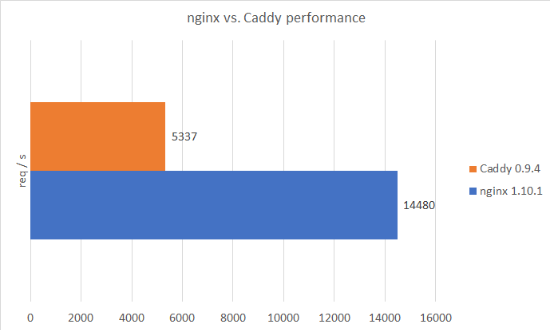

Caddy - a modern web server (vs. nginx)
Update: I’m glad to tell that this article made it to the front page of Hacker News only a few hours after publication 🤓.
At the time of writing this article the web is effectively powered by three different major web server software packages. A web server, as covered in this article, basically has two purposes. One is to serve static (no dynamic functionality, no backend, no databse, …) web sites, usually consisting of HTML, JavaScript and CSS plus images etc. The other is to act as a reverse-proxy to web application backends. The three servers I just mentioned have a combined market share of 94.7 % (according to this statistic) and are named Apache 2 (or httpd) (written in C), nginx (say “engine ex”) (also written in C) and Microsoft IIS (written in C++). While the first two are platform independent and open-source, the latter is a proprietary, commercial, Windows-only Microsoft product and therefore more interesting at enterprise level rather than for smaller indie projects. Consequently I won’t cover IIS further in the following.

_Most popular web servers on the internet (Source)_
nginx’ first release was in 2004 and Apache2’s roots even date back to 1995. Of course both projects are getting updates regularly, but their base concepts still remain the same. And at some point they might not perfectly fit today’s requirements anymore.
Personally I switched from Apache2 to nginx a few months ago mainly because of two reasons. The first one was that I had really been annoyed by Apache2’s extremely high memory overhead. The second reason was that Apache2 still didn’t have HTTP/2.0 support in 2016.

Apache2 vs. nginx memory usage (Source)
I was pretty happy with nginx and especially its performance as well as the large amount of documentation and forum posts on the web about every conceivable problem were great. But since I’m a developer and not a sysadmin there’s one thing I didn’t like. The configuration is not that intuitive and you really need to get into the syntax and concepts to get an understanding of knobs to turn in order to achieve a certain goal. It’s also much more fine-grained than necessary for the average user. Personally I just want a simple config file with an intuitive syntax where I can tell my web server which static content to display or which backend to reverse-proxy for which route / domain. This, plus some additional features like handling compression, TLS encryption, authentication and maybe some basic rewrites, is fine. Looking for a more modern web server that fulfills these requirements I found Caddy. As it turned out, it can even do a lot more cool things, while still being easy to use.
Caddy is written is Go, open-source and pretty actively (according to commit history) developed on GitHub. The goal when developing Caddy was exactly what I was looking for: easy configuration and fitness for today’s web applications. It comes with HTTP/2.0 (and even QUIC) support out of the box and serves via HTTPS by default (HTTP to HTTPS redirection is also handled automatically, while you manually had to tell Apache2 or nginx to do so). It even obtains (and regularly renews!) Let’s Encrypt certificates for every (sub)domain you specified in the config file. While enabling HTTPS for a site was really a pain some years ago, it’s done completely automatically now. You don’t need to run any script. You don’t even need to create a Let’s Encrypt account or install the certbot. At the center of Caddy are is the middleware (or directives), which are added to the config as a one-liner. The list of such is long and you will find a middleware for almost everything. For instance there are middleware components for logging, gzipping, header modification, (basic or JWT-based) authentication and load balancing. But also more fancy things like automatically serving Markdown as HTML, a plug-and-play file browser GUI, HTML minification, IP filtering or pattern-based text replacement in HTML files are available as middlewares. Caddy also aligns well with PHP, using php-fpm, just as nginx does. As usual with Go applications, the entire program is shipped as a single binary (available for Windows, Mac, Linux and BSD), which includes all of its dependencies. Consequently you don’t need to install any further libraries to be linked (-> no version conflicts), what really makes the installation a no-brainer. However, this introduces one little drawback in comparison to nginx modules: every middleware you want to use needs to be included into the binary and if it’s not, you need to re-compile the program (which is done for you by the download script at Caddy website, actually).
I migrated all of my websites and -apps from nginx to Caddy (which took me hardly more than an hour) and so far I’m happy with the setup. But what about performance?
To measure a very basic performance benchmark, I took this script, which I used in an earlier benchmark scenario. This script uses the h2load load test tool and I adjusted the parameters in a way that it performs a total of 100,000 requests against a specific route at my webserver with a number of 32 concurrent clients (each performing 3,125 requests) on 4 CPU threads. I ran both servers with almost their default configuration, except that I turned on HTTP/2.0 with a self-signed certificate. The file served was a static HTML file containing 6.2 kBytes of data. Both h2load and the respective web server were executed locally on the same machine with the following specs.
|
|
The results look like this.

Caddy vs. nginx performance comparison
As you can clearly see, nginx still performs way better, at least in this very simple scenario. However, Caddy is much more easy to use, in my opinion. Seems like we are having a classical trade-off here. Anyway, you should really give Caddy a try (and I’m not getting paid for this 😉). Concerning memory usage: I didn’t observe that in detail, but suprisingly I found that neither the Caddy process nor the sum of nginx worker processes exceeded 10 MB of RAM usage (may I have done something wrong?).
Please note that I only measured one specific figure (concurrent req/s) in one specific scenario. One can think of other benchmark setups where results might be the complete opposite, potentially.
By the way, Apache2 was not included to this benchmark, because I wanted to use HTTP/2.0. Actually in the meantime there is a mod_http2 for Apache2, but it’s not included in the majority of the builds, yet, and to be honest, I didn’t want to make an own one. If you’re interested in that, you can get a rough idea of Apache2 vs. nginx performance in this article (spoiler: it’s pretty poor).
So to conclude the discussion: Should you use Caddy in preference to nginx or Apache2? For private projects definitely yes, if you asked me. For more serious projects you should probably wait until it’s even a little more mature (e.g. when a 1.x.x version is out) and maybe also incorporating dynamic module loading. Until then I’d stick with nginx. Besides that I can’t figure out a reason for preferring Apache2 over nginx, except for being too lazy to do the migration.
Please let me know if you liked my article and also if you don’t agree with some of my arguments and insights.